Spinning
Poznaj podstawy aktywnego łowienia drapieżników, dobór zestawu i prowadzenie przynęt.
Blog
Poradniki, relacje znad wody i przeglądy trendów sprzętowych. Piszemy rzetelnie i praktycznie — bez koloryzowania wyników i bez reklamowania konkretnych modeli. Sezon 2026 w pełni, zapraszamy do lektury.
Wybierz temat, od którego chcesz zacząć: technikę, podstawy, planowanie sezonu albo zasady obowiązujące nad wodą.
Poznaj podstawy aktywnego łowienia drapieżników, dobór zestawu i prowadzenie przynęt.
Przejdź od wyboru metody i sprzętu do pierwszego, dobrze przygotowanego wyjazdu.
Sprawdź kalendarz brań, a przed łowieniem zweryfikuj okresy ochronne i wymiary dla wybranej wody.
Kategoria
Zmiany w prawie, zezwoleniach i zasadach wędkowania — co realnie dotyczy Cię nad wodą.
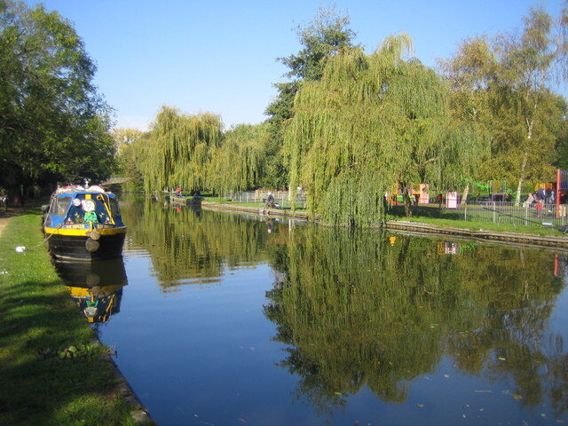
Technika
Street fishing — mobilny, lekki spinning w mieście. Poradnik od zera: sprzęt one rod, gatunki, taktyka nad kanałami i mostami, przynęty, prawo i…
Czytaj więcej →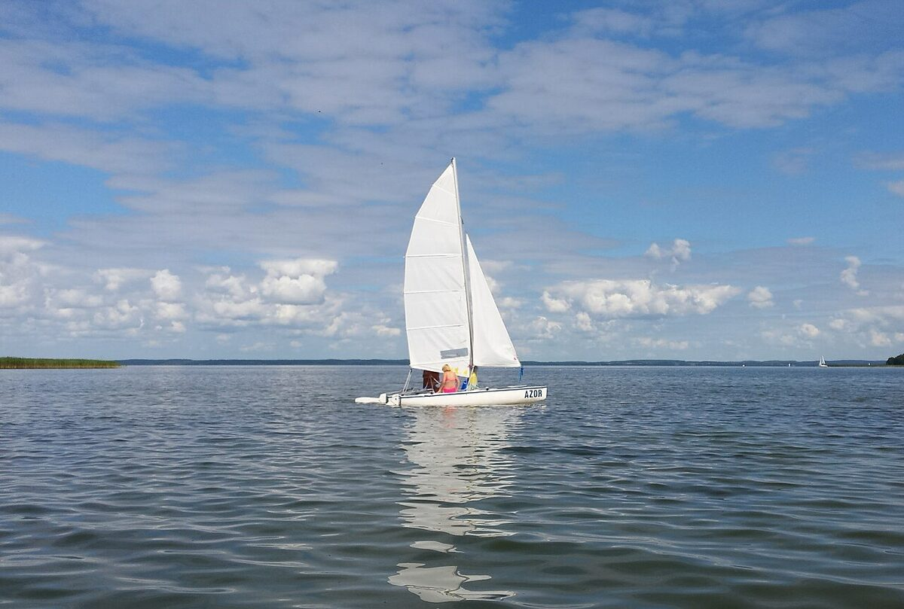
Technika
Kajak fishing dla początkujących: jaki kajak wędkarski wybrać, wyposażenie, bezpieczeństwo, techniki łowienia z kajaka i pierwsze wyprawy krok po…
Czytaj więcej →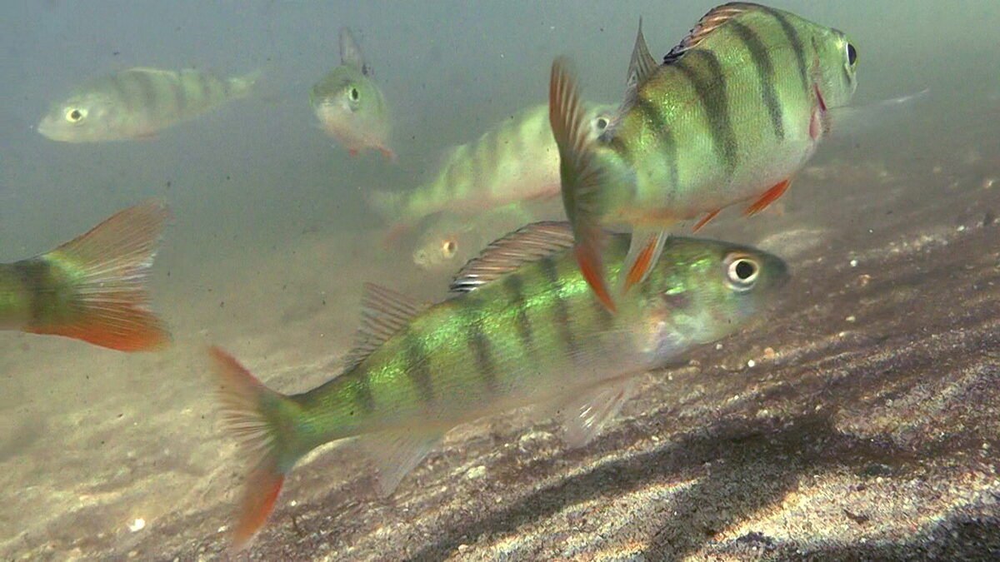
Technika
Mikroguma dla początkujących: jak dobrać pierwszy zestaw LRF, jakie przynęty i montaże wybrać oraz jak nauczyć się techniki i rozpoznawania brań krok…
Czytaj więcej →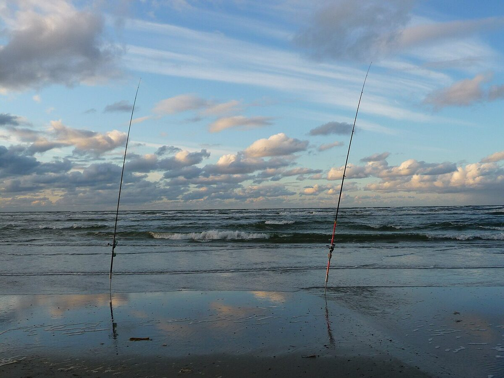
Sprzęt
Jaka wędka spinningowa dla początkujących i na kolejny sprzęt? Poradnik zakupowy: długość, ciężar wyrzutu, akcja i dobór pod okonia, szczupaka i…
Czytaj więcej →
Drapieżnik
Jak złowić sandacza jesienią? Praktyczny poradnik: spinning na sandacza, jigowanie przy dnie, dobór gum i główek, miejsca, pory doby i najlepsze…
Czytaj więcej →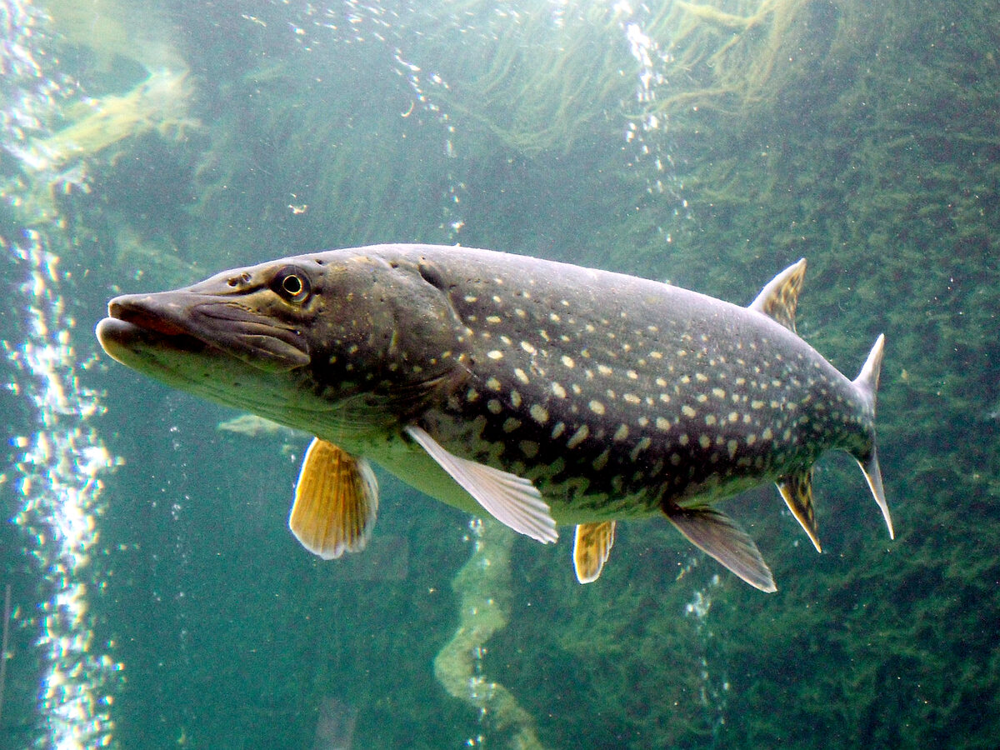
Drapieżnik
Spinning na szczupaka jesienią: gdzie szukać dużych ryb, jakie przynęty i tempo prowadzenia, dobór sprzętu, pogoda i bezpieczne wypuszczanie…
Czytaj więcej →Drapieżnik
Okoń jesienią na mikrogumę i drop shot: jak znaleźć kotły i ławice, dobrać jig, gumki i UL, prowadzić przynętę i rozgrzać branie. Praktyczny poradnik…
Czytaj więcej →Drapieżnik
Jerki na szczupaka od podstaw: typy przynęt, wędka do jerków, kołowrotek, przypon i technika prowadzenia. Praktyczny poradnik dla…
Czytaj więcej →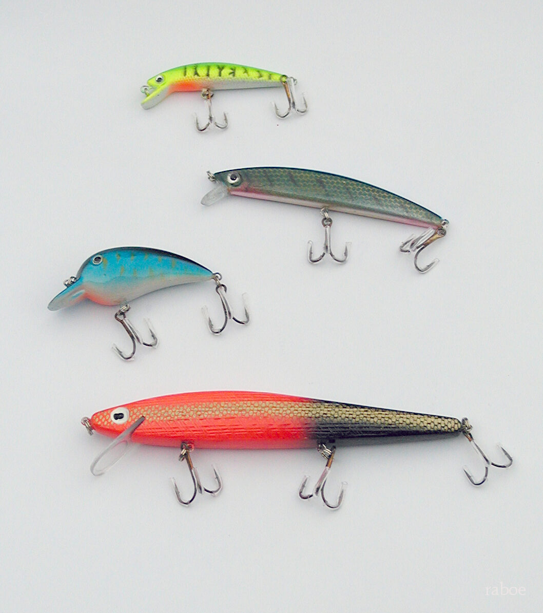
Drapieżnik
Guma na sandacza i szczupaka bez tajemnic: dobór rozmiaru, kształtu przynęty, ciężaru główki jigowej, koloru do wody i montażu. Praktyczny poradnik…
Czytaj więcej →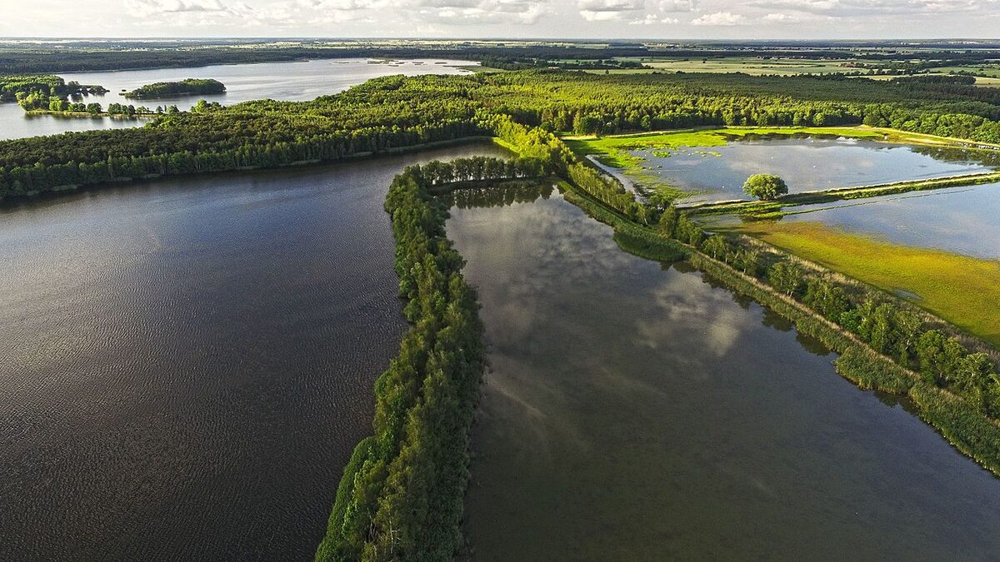
Przepisy
Kompletne zestawienie orientacyjnych, ogólnopolskich wymiarów i okresów ochronnych ryb na 2026 — szczupak, sandacz, sum, boleń i inne. Uwaga: okręgi PZW mogą zaostrzać zasady, zawsze…
Czytaj więcej →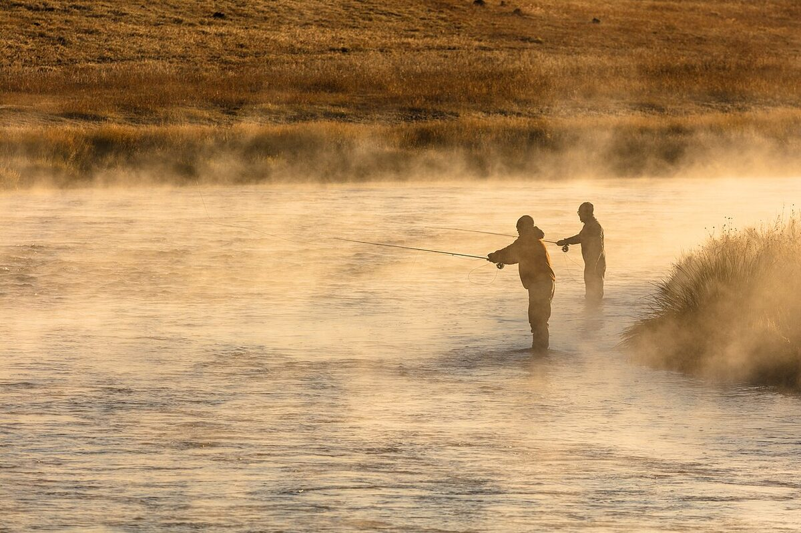
Przepisy
Kiedy otwiera się i zamyka sezon na szczupaka, sandacza, suma, bolenia, lipienia i pstrąga w 2026 roku. Orientacyjne terminy wynikające z okresów ochronnych — zawsze sprawdzaj regulamin…
Czytaj więcej →Przepisy
Zezwolenia elektroniczne są dostępne w części okręgów PZW, ale forma zakupu i dokumentu zależy od gospodarza konkretnej wody. Sprawdź aktualne zezwolenie, regulamin i sposób okazania dokumentów.
Czytaj więcej →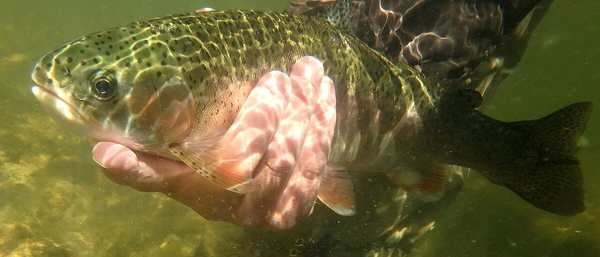
Przepisy
Coraz więcej wód wprowadza górny wymiar ochronny: największe okazy, tak jak najmniejsze, trzeba wypuścić. Po co chroni się duże tarlaki, jak czytać takie przepisy i gdzie je sprawdzić.
Czytaj więcej →Kategoria
Największe okazy sezonu i głośne połowy — kto, kiedy i jak je złowił.
Rekordy
Koniec stycznia przyniósł jeden z głośniejszych wyników sezonu: okoń 52 cm i 2,76 kg. Tłumaczymy, dlaczego zima rodzi największe „garbusy" i jak dziś liczy się rybie rekordy w Polsce.
Czytaj więcej →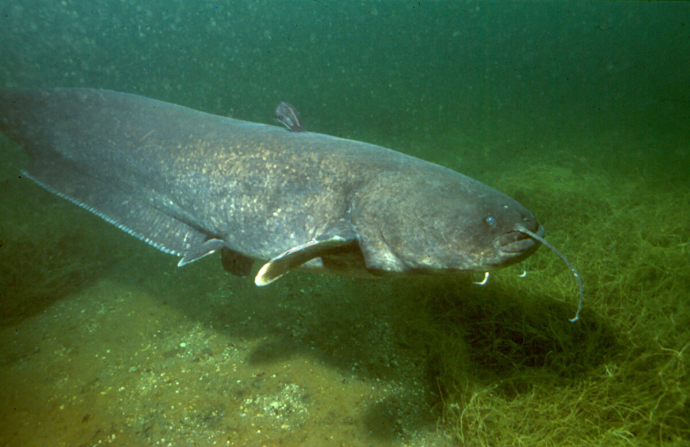
Rekordy
Wąsacz długości niemal trzech metrów, wzięty na spinning z łodzi i wypuszczony po pomiarze. Jak łowi się takie sumy i dlaczego długość zastępuje dziś wagę w tabelach rekordów.
Czytaj więcej →Kategoria
Stan wód, zagrożenia i odpowiedzialne wędkarstwo.
Środowisko
Latem 2026 służby znów odnotowały lokalne śnięcia ryb na Odrze. Czym jest złota alga, dlaczego wraca co roku, jak reagować na śnięte ryby i o czym pamiętać nad zagrożoną wodą.
Czytaj więcej →Kategoria
Co, gdzie i jak łowić w danym momencie sezonu.
Sezon
Kalendarz wędkarski 2026 miesiąc po miesiącu: co bierze zimą, wiosną, latem i jesienią, jakie gatunki poza okresem ochronnym i jakimi metodami łowić przez cały rok.
Czytaj więcej →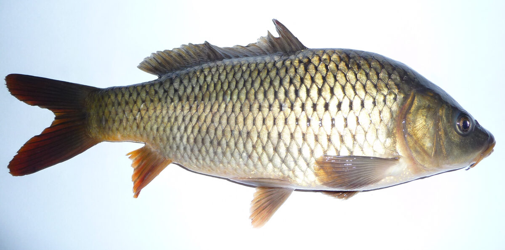
Karp
Na co bierze karp latem? Podpowiadamy skuteczne przynęty — kulki proteinowe, kukurydzę, pelety i method feeder — oraz taktykę: nęcenie, dobór miejsca i najlepsze pory żerowania w upały.
Czytaj więcej →Karp
Gdy woda ma 25 stopni, karp zmienia rytm: żeruje nocą, o świcie i pod powierzchnią. Podpowiadamy pory, miejsca, metody i przynęty na lipcowego karpia oraz jak nie zaszkodzić rybie w ciepłej wodzie.
Czytaj więcej →Sum
Parne, letnie noce to najlepszy czas na suma. Gdzie go szukać, jakie metody i przynęty działają, jaki sprzęt wytrzyma walkę i jak łowić bezpiecznie po zmroku — kompletny przewodnik na szczyt sezonu.
Czytaj więcej →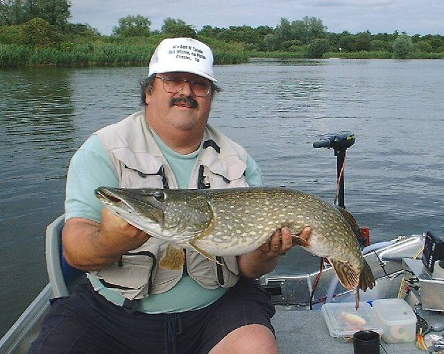
Drapieżnik
Koniec okresu ochronnego to najgorętszy moment wiosny. Podpowiadamy, gdzie szukać szczupaka tuż po tarle, jakie przynęty prowadzić wolno i nisko oraz jak nie spalić pierwszych dni sezonu zbyt agresywną taktyką.
Czytaj więcej →Kategoria
Praktyka gatunek po gatunku i pierwsze kroki w nowych wodach.
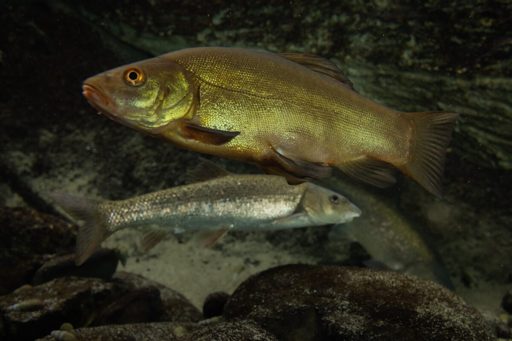
Poradnik
Lin bierze o świcie i przedpołudniem w ciepłych, zarośniętych wodach. Podpowiadamy najlepsze przynęty, miejscówki, sposób nęcenia i dobór zestawu na lina wiosną i latem.
Czytaj więcej →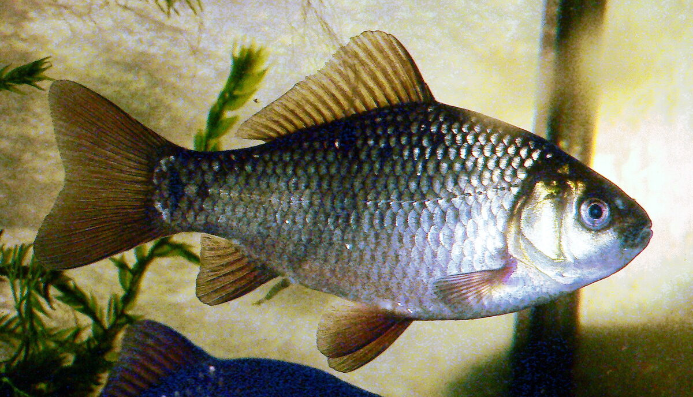
Poradnik
Karaś to wytrzymała ryba ciepłych, płytkich, zarośniętych stawów i starorzeczy. Podpowiadamy przynęty, delikatny zestaw spławikowy, nęcenie i najlepsze miejscówki na udany połów wiosną i…
Czytaj więcej →
Morze
Wędkarstwo morskie na Bałtyku dla początkujących: łowienie z brzegu (surfcasting) i z kutra, sprzęt odporny na sól, przynęty, gatunki, sezony, bezpieczeństwo i formalności.
Czytaj więcej →Kategoria
Dobór sprzętu, przynęt i metod — bez reklamy konkretnych modeli.
Spinning
Jaka przynęta na spinning? Przegląd gum, woblerów, błystek i zestawów jigowych oraz dobór do okonia, szczupaka i sandacza — kolor, ciężar i sezon. Praktyczny poradnik.
Czytaj więcej →Spinning
Temperatura wody dyktuje aktywność drapieżników bardziej niż cokolwiek innego. Przegląd czterech pór roku: od powolnych gum zimą, przez wiosenne płycizny, po jesienne polowanie na duże woblery.
Czytaj więcej →
Sprzęt
Rozciągliwość, średnica, widoczność, odporność na przetarcia i cena — porównujemy obie linki bez ideologii i podpowiadamy, kiedy każda z nich naprawdę wygrywa.
Czytaj więcej →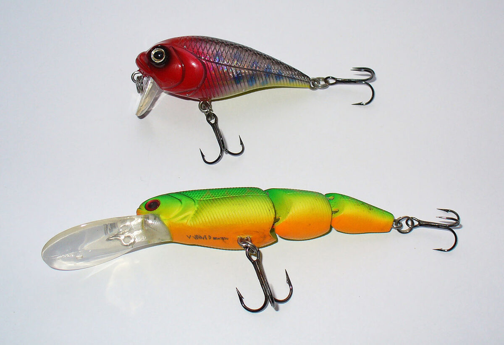
Sprzęt
Co naprawdę zmienia się w sprzęcie: lżejsze blanki, finezyjne metody spinningowe, elektronika nad wodą i rosnąca rola akcesoriów do bezpiecznego obchodzenia się z rybą.
Czytaj więcej →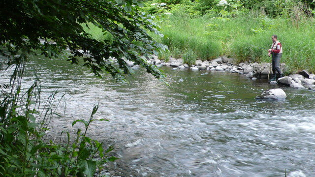
Feeder
Przenęcanie łowiska, zbyt gruby zestaw, brak punktu nęcenia i siłowe holowanie — zebraliśmy błędy, które kosztują najwięcej ryb, oraz proste sposoby, jak ich uniknąć od pierwszej zasiadki.
Czytaj więcej →Kategoria
Starty, terminarze i taktyka na zawodach wędkarskich.
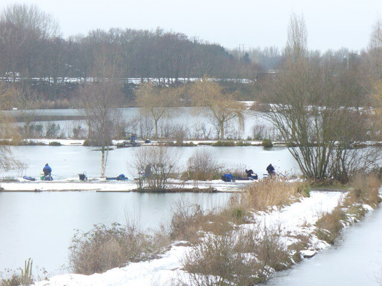
Zawody
Spławik, feeder, karp, spinning — sezon startów w pełni. Gdzie szukać terminarzy zawodów w całej Polsce, jak wybrać pierwsze zawody i co przygotować przed debiutem.
Czytaj więcej →Zawody
Zapisy, losowanie sektorów, regulaminy, taktyka na pięć godzin łowienia i lista sprzętu, bez którego nie warto jechać. Wszystko, co trzeba wiedzieć przed debiutem.
Czytaj więcej →Kategoria
Reportaże i wnioski z konkretnych wypraw.

Relacja
Dwadzieścia godzin nad żwirownią: cisza, mżawka, dwa sygnalizatory o trzeciej nad ranem i kilka wniosków, które zostaną z nami na cały sezon.
Czytaj więcej →Wpisy na blogu FishPoint opieramy na własnej praktyce nad wodą i powszechnej wiedzy wędkarskiej; porady traktuj jako wskazówki, a nie gwarancję brań. Terminy ochronne, wymiary i limity zawsze sprawdzaj w aktualnych komunikatach PZW i regulaminach łowisk.